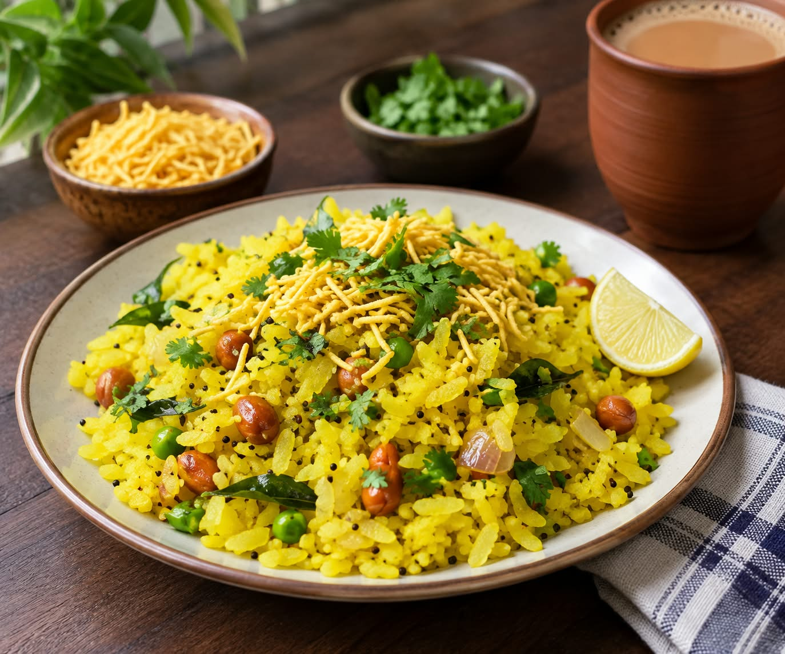
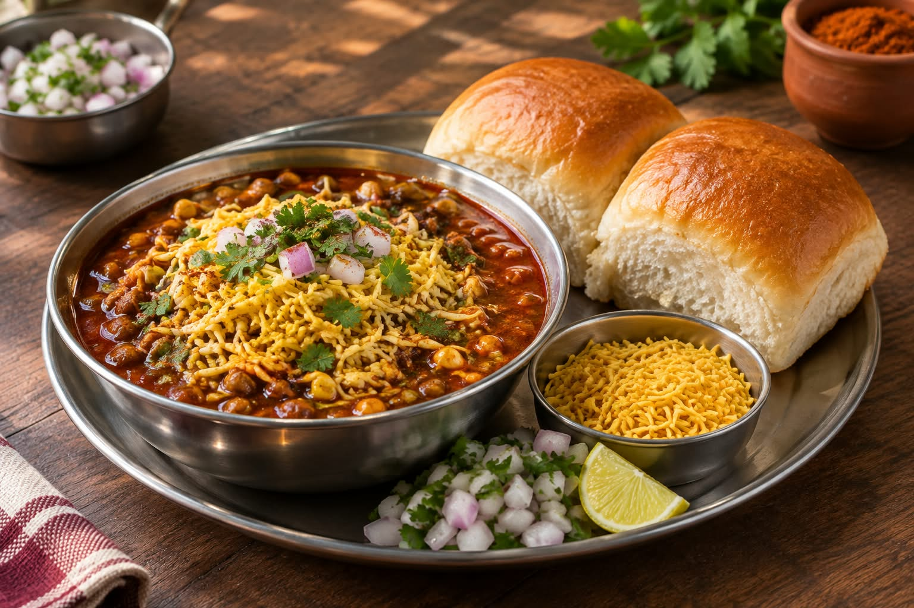
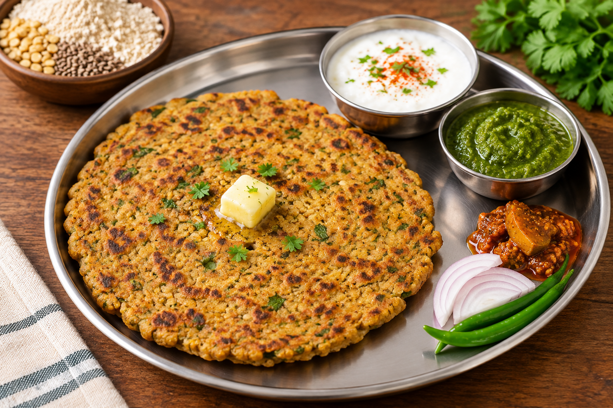
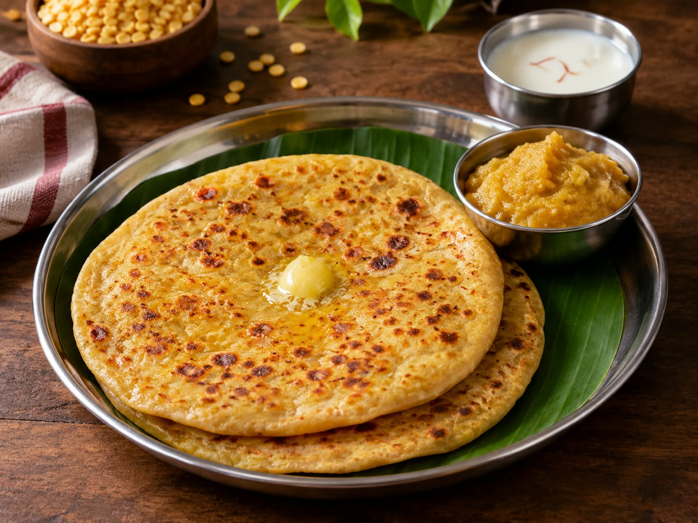
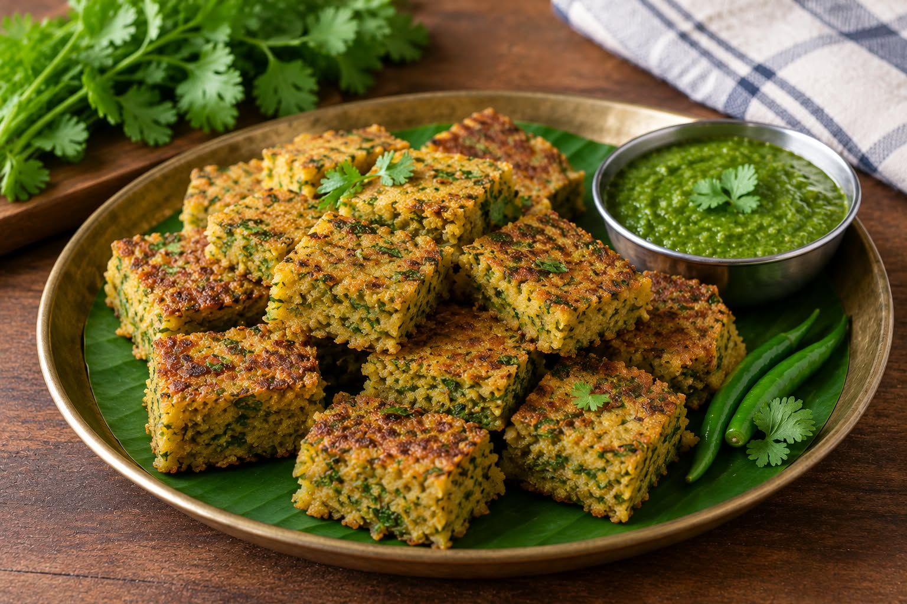
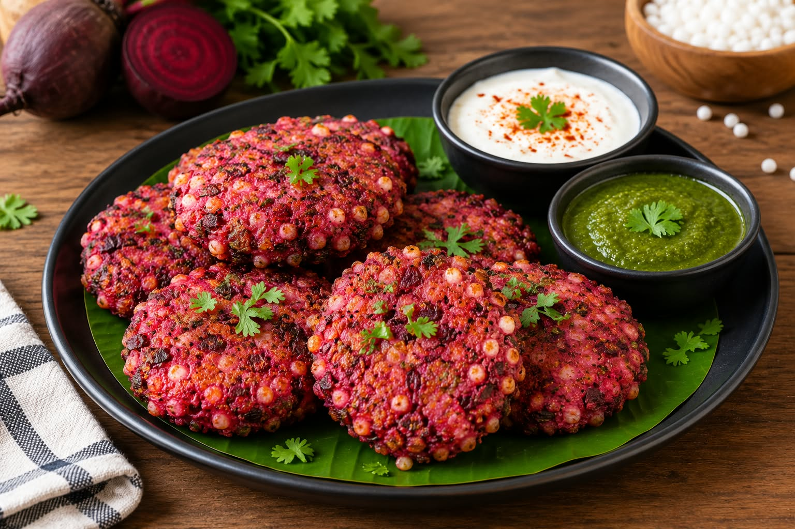
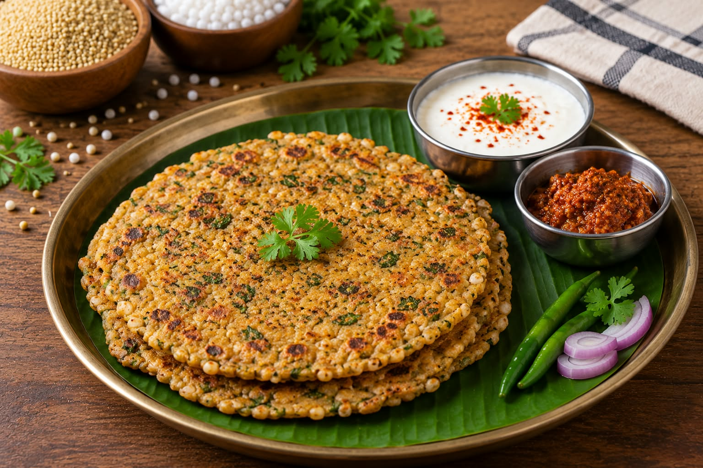
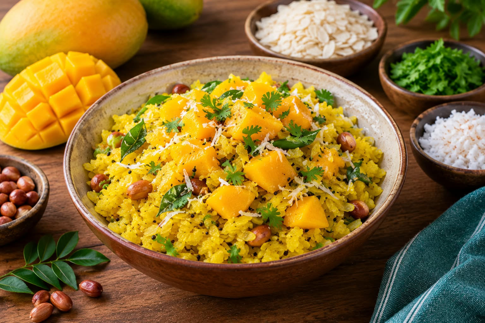

-
Maharashtrian Recipes
-
Popular Recipes ( प्रसिद्ध रेसीपीस )

Poha is a traditional, savory breakfast dish made from flattened rice flakes sautéed with onions and potatoes.
Poha

Misal Pav is a traditional Maharashtrian dish served with spicy curry, farsan and pav.
Misal Pav

Sabudana Khichadi is made with sabudana, potatoes and peanuts.
Sabudana Khichadi

Vada Pav is a traditional Maharashtrian street food consisting of a spicy, deep-fried potato dumpling placed inside a soft bread roll.
Vada Pav

Thalipeeth or thalipith is a savoury multi-grain flatbread popular in Western India, particularly in the state of Maharashtra
Thalipith

Puran poli is a sweet Indian flatbread stuffed with a spiced chana dal and jaggery filling.
Puran Poli

Kothimbir vadi is a crispy Maharashtrian snack made from steamed and deep-fried cakes of fresh coriander leaves, chickpea flour, and spices.
Kothambir Vadi
Latest Reccipes ( नवीन रेसीपीस )

Beetroot sabudana vada is a crisp, bright-pink tapioca patty enriched with nutritious grated beetroot, potatoes, and peanuts.
Beetroot Sabudana Vada

Millet and sago thalipeeth is a healthy, multi-grain Maharashtrian flatbread made by patting down a dough of nutrient-rich millet flour, soaked tapioca pearls, and spices directly onto a pan to roast until crisp.
Millet and Sago Thalipeeth

Mango poha is a modern seasonal breakfast where traditional savory flattened rice is topped with fresh, sweet Alphonso mango cubes for a sweet-and-sour flavor contrast.
Mango Poha

Crunchy-chewy sabudana chivda is a modern, slow-toasted Maharashtrian snack made from tapioca pearls that are cooked to keep them glassy and chewy rather than completely deep-fried and hard.
Crunchy-Chewy Sabudana Chivda

Vegan pandhara rassa is a plant-based recreation of Kolhapur’s famous white, creamy meat broth made with coconut milk, aromatic spices, and seeds instead of dairy or meat stock.
Vegan Pandhara Rassa

Pune-style Mango Mastani is a thick, luxurious mango milkshake topped with a scoop of vanilla or mango ice cream, cut fruits, nuts, and cherries.
Pune-style Mango Mastani

Thecha fried rice is a fiery Indo-Chinese fusion dish that tosses stir-fried rice and vegetables with Maharashtrian green chilli thecha (a coarsely crushed paste of green chillies, garlic, and peanuts).